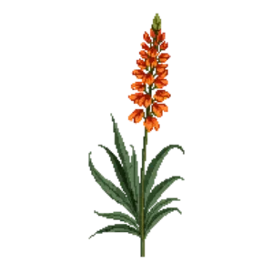

Montbretia
Crocosmia x crocosmiiflora

Montbretia is a perennial for focal point, mid-border, suited to full sun to partial shade and clay, loam or moist ground, flowering Jul, Aug, Sep.
| Type | Perennial |
|---|---|
| Mature height | 75 cm |
| Spread | 45 cm |
| Aspect | full sun to partial shade |
| Foliage | Deciduous |
| Hardiness | USDA 6a-9a, RHS H4 |
| Pollinator-friendly | Yes |
| Pet-safe | No |
Where to use it in a border
At around 75 cm, it sits best toward the back of a border, or on its own as a focal point with room around it. Give it about 45 cm of room to spread, roughly 2 to the metre when planted in a drift. It is hardy across USDA zones 6a to 9a and rated H4 by the RHS, so check it suits your area before planting.
It appears in our lists of full sun, clay soil, wet soil, pollinator-friendly plants.
Border Builder uses Montbretia's height, spread, soil, bloom months and companions to place it in a full border plan for your own conditions, on iPhone and iPad.
Flowering through the year
Worth knowing
- It copes with ground that stays wet, which most border plants will not.
- Not recorded as pet-safe; site it away from pets that graze if that matters to you.
- Its flowers are valued by bees and other pollinators.
Good companions
Plants that share its conditions and style, chosen to complement its place in the border:
- Cranesbill 'Mavis Simpson'to edge in front
- Lavender 'Munstead'to edge in front
- Mexican Fleabaneto edge in front
- Perennial Wallflower 'Bowles's Mauve'to edge in front
- Rosemaryto flower when it does not
- Seaside Daisy 'Sea Breeze'to edge in front
Garden styles
Coastal Cottage garden Wildlife garden
Sources
Bloom timing and hardiness drawn from: